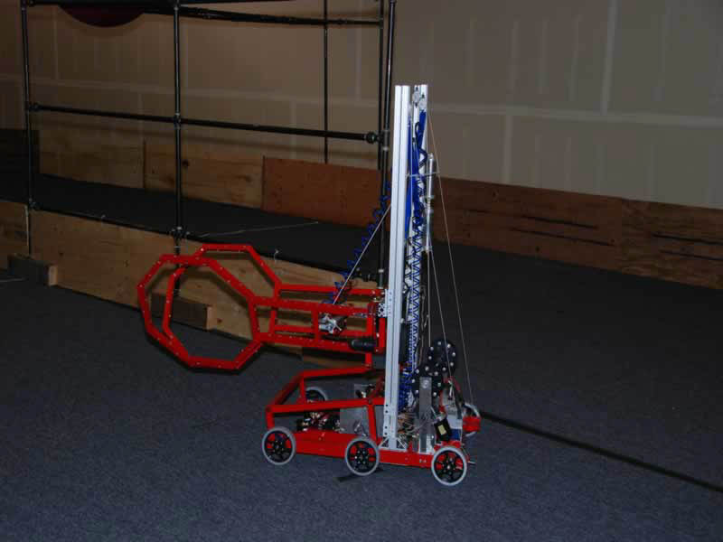

Aerial Assist
In the 2014 game, Aerial Assist, is played by two competing Alliances of three robots each on a flat 25’ x 54’ foot field, straddled by a truss suspended just over five feet above the floor. The objective is to score as many balls in goals as possible during a two (2)-minute and 30-second match. The more Alliances score their ball in their goals, and the more they work together to do it, the more points their Alliance receives.

Ultimate Ascent
In the 2013 game, Ultimate Ascent, two Alliances of three teams compete by shooting standard Frisbee discs into goals at the far end of the field to score. At the end of the match, they climb "jungle-gym"-like pyramids to earn bonus points.

Rebound Rumble
In the 2012 game, Rebound Rumble, two Alliances of three teams compete by trying to score as many basketballs in the hoops as possible during the two- minute and 15-second match. Balls scored in higher hoops score Alliances more points. Alliances are awarded bonus points if they are balanced on bridges at the end of the match. In matches where opponent Alliances work together to balance on the white “Coopertition®” bridge, all participating teams earn additional valuable seeding points.

LOGO MOTION
In the 2011 game, LOGO MOTION, two alliances of three teams compete on a 27-by-54-foot field with poles, attempting to earn points by hanging as many triangle, circle, and square logo pieces as possible. Bonus points are earned for each robot that can hang and assemble logo pieces to form the FIRST logo. Robots can also deploy Mini-Bots to climb vertical poles for a chance to earn additional points.

BREAKAWAY
In the 2010 game, BREAKAWAY, two alliances of three teams compete on a 27-by-54-foot field with bumps, attempting to earn points by collecting soccer balls in goals. Additional bonus points are earned for each robot suspended in air and not touching the field at the end of the match.

LUNACY
In the 2009 game, LUNACY, robots are designed to pick up 9" game balls and score them in trailers hitched to their opponents' robots for points during a 2 minute and 15 second match. Additional points are awarded for scoring a special game ball, the Super Cell, in the opponents' trailers during the last 20 seconds of the match. "LUNACY" is played on a low-friction floor, which means teams must contend with the laws of physics.

FIRST Overdrive
In the 2008 game, "FIRST Overdrive", students' robots are designed to race around a track knocking down 40" inflated Trackballs and moving them around the track, passing them either over or under a 6'6" overpass. Extra points are scored by robots positioning the Trackballs back on the overpass before the end of the 2 minute and 15 second match.
Rack 'N' Roll
In the 2007 game, "Rack 'N' Roll," students' robots are designed to hang inflated colored tubes on pegs configured in rows and columns on a 10-foot high center "rack" structure. Extra points are scored by robots being in their home zone and lifted more than 4" off the floor by another robot before the end of the 2 minute and 15 second match.

Aim High
In the 2006 game, "Aim High", students' robots are designed to launch balls into goals while human players enter balls into play and score points by throwing/pushing balls into corner goals. Extra points are scored by robots racing back to their end zones and climbing the ramp to the platform before the end of the 2 minute and 10 second match.

Triple Play
The game for the 2005 season is played on a 27' wide by 52' long playing field with the 9 goals configured in 3 x 3 matrix, similar to tic-tac-toe. The robots will attempt to place the red and blue game tetras in or on one or more of the nine goals to score points and "claim ownership" of the goals.